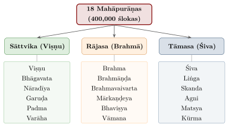
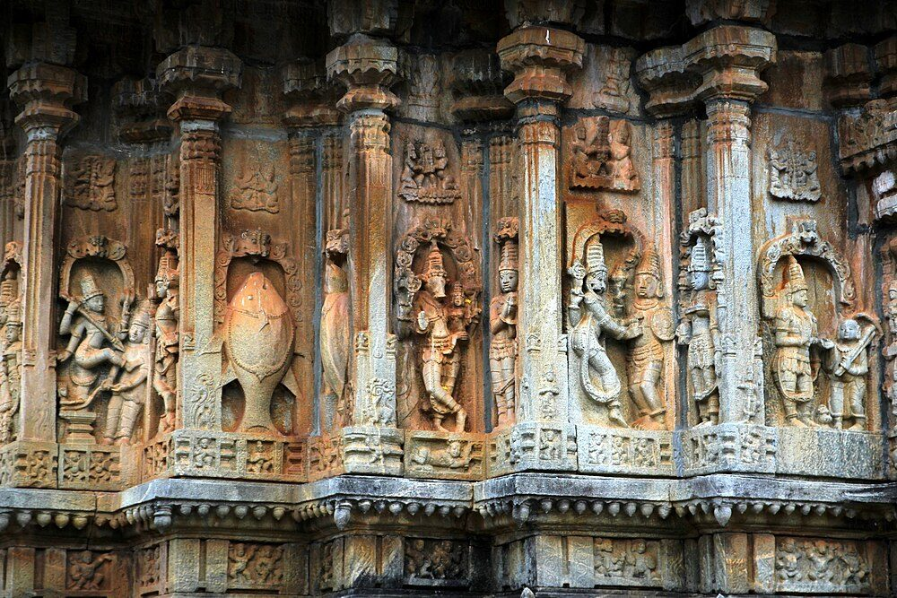
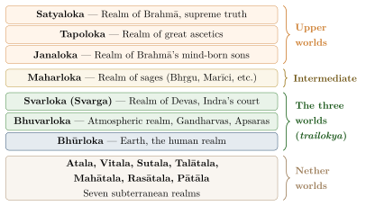

Chapter 7: The Eighteen Mahāpurāṇas¶
The Purāṇas form a very large and varied body of Sanskrit literature. The word purāṇa means “ancient” (from purā, “formerly”), and these texts gather cosmological, genealogical, mythological, ritual, philosophical and devotional lore. Recited by professional paurāṇikas to mixed audiences, they became the main vehicle of Hindu religious teaching for people who had no access to the Veda. Their inclusiveness had limits — they frequently reaffirm the hierarchy of varṇa and the subordination of women and Śūdras — but they also preserved, in their māhātmyas, the gods and holy places of communities far beyond the brahmanical elite (Rocher 1986).
The tradition assigns the eighteen Mahāpurāṇas (Great Purāṇas) a combined total of 400,000 ślokas (Bhāgavata Purāṇa 12.13), four times the traditional size of the Mahābhārata. The printed texts do not always match the traditional figures: the Viṣṇu Purāṇa, for example, claims 23,000 verses but has about 6,000–7,000.
7.1 Definition and Pañca Lakṣaṇa¶
As discussed in Chapter 1, a Purāṇa is defined by its five characteristics (Pañca Lakṣaṇa):
-
Sarga — Primary creation (cosmogony)
-
Pratisarga — Secondary creation, dissolution, and re-creation
-
Vaṃśa — Genealogies of gods, sages, and Prajāpatis
-
Manvantara — Cosmic epochs presided over by Manus
-
Vaṃśānucarita — Genealogical histories of royal dynasties (Sūrya Vaṃśa and Candra Vaṃśa)
However, the actual content of the Mahāpurāṇas far exceeds these five topics. They also contain:
-
Dharmaśāstra: Law, ethics, duties of different stages of life
-
Tīrtha Māhātmya: Glorification of sacred places
-
Vrata Kathā: Stories and methods of religious observances
-
Dāna Vidhi: Methods and merits of charitable giving
-
Stotras and Prayers: Hymns to various deities
-
Yoga and Meditation: Spiritual practices
-
Jyotiṣa and Kalpa: Astrology and rituals
-
Technical subjects: Architecture, medicine, music, iconography
7.2 Dating and Formation of the Purāṇas¶
Purāṇa as a category of lore is old: the Atharvaveda, the Śatapatha Brāhmaṇa and the Chāndogya Upaniṣad mention itihāsa and purāṇa as subjects of recitation, and the Āpastamba Dharmasūtra (3rd–2nd century BCE) cites a “Bhaviṣyat Purāṇa.” None of the extant Purāṇas, however, survives in a form that can be dated to that period. The most influential attempt to date them was made by R. C. Hazra, whose Studies in the Purāṇic Records on Hindu Rites and Customs (1940) and Studies in the Upapurāṇas (1958–63) analysed the chapters on ritual and law that the Purāṇas share with the Dharmaśāstras. Hazra placed the oldest layers of the Mārkaṇḍeya, Vāyu, Brahmāṇḍa, Viṣṇu and Matsya Purāṇas in roughly the 3rd–5th centuries CE, and most others later, some well into the second millennium (Hazra 1940, 1958–1963).
One useful anchor is the account of the “future” kings of the Kali age, which several Purāṇas narrate as prophecy. Pargiter showed that these lists are reasonably accurate for the Nandas, Mauryas, Śuṅgas, Kāṇvas and Āndhras (Sātavāhanas), and that they end with the early Guptas ruling along the Gaṅgā — which suggests that this material was given its form in about the fourth century CE (Pargiter 1913). The much longer genealogies of the Solar and Lunar dynasties for the earlier ages are another matter: historians regard them as legendary constructions that cannot be used to build a chronology (Thapar 2013).
Ludo Rocher’s survey stresses a more fundamental point. The Purāṇas were never fixed texts. Each was recited, expanded, abridged and reworked over centuries, so that a date can be given only for a particular version or section, not for “the” Purāṇa; the same Purāṇa may exist in quite different recensions, and the classical definition of five characteristics describes an ideal rather than the actual contents (Rocher 1986). Two examples illustrate this fluidity. A Nepalese manuscript of a Skandapurāṇa dated 810 CE contains a text quite unlike the vast printed Skanda Purāṇa, much of whose material is later (Adriaensen et al. 1998); and the Pratisargaparvan of the printed Bhaviṣya Purāṇa contains “prophecies” of medieval and even British rule, added in the early modern period.
Within this history, scholars distinguish an older layer concerned with cosmology, genealogy and smārta ritual from later sectarian reworkings that exalt Viṣṇu, Śiva or the Goddess, and a steady incorporation of local deities, pilgrimage places and festivals through māhātmya chapters. The Purāṇas were thus one of the principal means by which brahmanical religion absorbed and reshaped regional traditions. Jains, too, wrote their own purāṇas — notably Jinasena’s Ādipurāṇa (9th century) — presenting a Jain universal history (Doniger 1993).
The Nepalese Skandapurāṇa shows what the earliest sectarian Purāṇas looked like before later expansion. Probably composed in the sixth or seventh century, it is a Śaiva text that tells the myths of Śiva and Pārvatī and of their son Skanda, and it maps a network of Śaiva holy places across northern India, with Vārāṇasī prominent among them. Peter Bisschop’s study of its sacred geography connects these sites with the Śaiva ascetic communities, above all the Pāśupatas, who were active at them, and so shows a Purāṇa recording the institutions of a particular religious movement at a particular time (Adriaensen et al. 1998; Bisschop 2006). The same approach to the Goddess Purāṇas and to the Upapurāṇas of the regions is described in Chapter 8.
7.3 The Tripartite Classification¶
The eighteen Mahāpurāṇas are classified in the Padma Purāṇa (a Vaiṣṇava text) into three groups of six according to the three guṇas: sāttvika (associated with Viṣṇu), rājasa (associated with Brahmā) and tāmasa (associated with Śiva). The scheme reflects its Vaiṣṇava origin: the Śaiva Purāṇas are ranked lowest (Figure 7.1).

Scholarly Note: On Classification
The assignment of Purāṇas to groups varies across sources, and so does the list of eighteen itself: some lists include the Vāyu Purāṇa and others the Śiva Purāṇa, and several texts claim Mahāpurāṇa status. Moreover, every Purāṇa contains hymns and teachings related to several deities. The classification should therefore be understood as indicating predominant emphasis, not exclusive focus.
7.4 The Eighteen Mahāpurāṇas: A Mnemonic Verse¶
A traditional mnemonic verse lists all eighteen:
Mnemonic for the 18 Mahāpurāṇas (Devībhāgavata 1.3.2)
Sanskrit:
ma-dvayaṃ bha-dvayaṃ caiva bra-trayaṃ va-catuṣṭayam
a-nā-pa-liṅ-ga-kū-skāni purāṇāni pṛthak pṛthak
Expansion:
Ma(tsya), Mā(rkaṇḍeya); Bha(viṣya), Bhā(gavata);
Bra(hma), Bra(hmāṇḍa), Bra(hmavaivarta);
Vā(mana), Va(rāha), Vi(ṣṇu), Vā(yu) (other lists have Śiva in place of Vāyu);
A(gni), Nā(radīya), Pa(dma), Liṅ(ga), Ga(ruḍa), Kū(rma), Ska(nda)
7.5 Detailed Study of Each Mahāpurāṇa¶
The figures for ślokas given below are the traditional counts (Bhāgavata Purāṇa 12.13); printed texts often differ considerably.
7.5.1 Brahma Purāṇa¶
Traditionally assigned 10,000 ślokas and placed first in most lists, the Brahma Purāṇa is also called the Ādi Purāṇa, “the first Purāṇa.” The printed text (some 245 chapters) opens with cosmogony and genealogy but consists largely of māhātmyas of Puruṣottama (Jagannātha at Purī), of Koṇārka and of the Godāvarī; despite its traditional primacy it is a late compilation that draws heavily on other Purāṇas.
7.5.2 Padma Purāṇa¶
The Padma Purāṇa (traditionally 55,000 ślokas) is a Vaiṣṇava work whose division into five or six books (khaṇḍas) differs between recensions (one arrangement has Sṛṣṭi, Bhūmi, Svarga, Pātāla and Uttara Khaṇḍas). It is rich in tīrtha māhātmyas and contains the classification of the Purāṇas by the three guṇas discussed above.
7.5.3 Viṣṇu Purāṇa¶
The Viṣṇu Purāṇa is often regarded as the most “model” Purāṇa — the one that most closely follows the five-characteristic scheme. Its core is usually placed in the mid-first millennium CE (Hazra suggested c. 4th century CE), making it one of the oldest extant Purāṇas (Hazra 1940). Narrated by Parāśara to his disciple Maitreya in six books (aṃśas), it gives a systematic account of creation, cosmography, cyclic time and the royal genealogies, and in its fifth book a life of Kṛṣṇa that builds on the Harivaṃśa. Tradition assigns it 23,000 ślokas; the printed text has about 6,000–7,000.
7.5.4 Śrīmad Bhāgavata Purāṇa (Bhāgavatam)¶
The Bhāgavata Purāṇa is the most widely read and most often commented upon of the Purāṇas. Most current scholarship dates it to c. 9th–10th century CE and locates its composition in South India, where its intense, emotional devotion to Kṛṣṇa shows the influence of the Tamil Āḻvār poets; Hazra had earlier argued for the 6th century (Hardy 1983; Bryant 2003). Traditionally of 18,000 ślokas in twelve books (skandhas; Section 7.9), it is narrated by Śuka to King Parīkṣit in the seven days before his death, and describes itself as the ripened fruit of the wish-fulfilling tree of the Veda:
The Ripened Fruit — Bhāgavata 1.1.3
Sanskrit:
nigamakalpataror galitaṃ phalaṃ
śukamukhād amṛtadravasaṃyutam
pibata bhāgavataṃ rasam ālayaṃ
muhur aho rasikā bhuvi bhāvukāḥ
Translation:
“O connoisseurs of spiritual bliss! Drink again and again the nectar of the Bhāgavatam — the ripened fruit fallen from the wish-fulfilling tree of Vedic literature, made sweeter by flowing from the lips of Śukadeva.”
7.5.5 Śiva Purāṇa¶
The Śiva Purāṇa (traditionally 24,000 ślokas), which some lists name in place of the Vāyu Purāṇa, is in its printed form divided into seven collections (saṃhitās): Vidyeśvara, Rudra, Śatarudra, Koṭirudra, Umā, Kailāsa and Vāyavīya. It narrates the myths of Śiva and Pārvatī, the origin of the twelve Jyotirliṅgas (Section 8.4) and the forms of Śaiva worship and practice.
7.5.6 Skanda Purāṇa¶
The largest of all Purāṇas by traditional count (81,100 ślokas). The printed text, divided into seven khaṇḍas (Māheśvara, Vaiṣṇava, Brahma, Kāśī, Āvantya, Nāgara and Prabhāsa) or into saṃhitās in another arrangement, is a vast and late collection of tīrtha māhātmyas, among them the Kāśī Khaṇḍa, the Revā Khaṇḍa and the Setu Māhātmya. An earlier and very different Skandapurāṇa survives in Nepalese manuscripts, one of them dated 810 CE (Section 7.2). All eighteen are summarised in Table 7.1; the remaining Mahāpurāṇas are described after it.
| Purāṇa | Ślokas (trad.) | Group | Distinctive Content |
|---|---|---|---|
| Brahma | 10,000 | Rājasa | Creation, Puruṣottama (Jagannātha) Māhātmya |
| Padma | 55,000 | Sāttvika | Tīrthas, classification of Purāṇas |
| Viṣṇu | 23,000 | Sāttvika | Model Purāṇa, cyclic cosmology |
| Śiva (or Vāyu) | 24,000 | Tāmasa | Śiva myths, Jyotirliṅgas |
| Bhāgavata | 18,000 | Sāttvika | Kṛṣṇa’s life, devotion, philosophy |
| Nāradīya | 25,000 | Sāttvika | Vratas, tīrthas, summaries of the other Purāṇas |
| Mārkaṇḍeya | 9,000 | Rājasa | Devī Māhātmya; Hariścandra; Madalasā |
| Agni | 15,400 | Tāmasa | Encyclopaedic: grammar, medicine, law, architecture |
| Bhaviṣya | 14,500 | Rājasa | “Prophecies” (many very late), vratas, sun worship |
| Brahmavaivarta | 18,000 | Rājasa | Rādhā and Kṛṣṇa; a late text |
| Liṅga | 11,000 | Tāmasa | Origin of the liṅga, Śiva worship |
| Varāha | 24,000 | Sāttvika | Rescue of the earth, Vaiṣṇava rites |
| Skanda | 81,100 | Tāmasa | Largest; tīrtha māhātmyas |
| Vāmana | 10,000 | Rājasa | Vāmana avatāra; Śiva and Viṣṇu |
| Kūrma | 17,000 | Tāmasa | Kūrma avatāra, Īśvara Gītā |
| Matsya | 14,000 | Tāmasa | Matsya avatāra, dynasties, iconography and temples |
| Garuḍa | 19,000 | Sāttvika | After-death rites (Pretakalpa), gems, medicine |
| Brahmāṇḍa | 12,000 | Rājasa | Lalitā cult; cosmic egg; the Adhyātma Rāmāyaṇa is attributed to it |
| Total | 400,000 |
7.5.7 Vāyu and Brahmāṇḍa Purāṇas¶
The Vāyu and Brahmāṇḍa Purāṇas share long passages, often word for word, in their accounts of creation, cosmography, the Manvantaras and the royal genealogies, and most scholars regard them as two later recensions of what was once a single text. Willibald Kirfel used this shared material, together with parallels in the Viṣṇu, Matsya and other Purāṇas, to reconstruct an early common core that corresponded closely to the five characteristics, and the Vāyu is usually counted among the oldest of the extant Purāṇas (Kirfel 1927; Rocher 1986). Both texts were later expanded in different directions. The Vāyu acquired, among other additions, a Gayāmāhātmya on the ancestral rites at Gayā; the Brahmāṇḍa came to include the Lalitopākhyāna, the charter narrative of the Śrīvidyā cult of the goddess Lalitā, from which the widely recited Lalitāsahasranāma is taken, as well as the Adhyātma Rāmāyaṇa (Table 7.1).
7.5.8 Mārkaṇḍeya Purāṇa¶
The Mārkaṇḍeya Purāṇa (traditionally 9,000 ślokas) is among the most varied of the Purāṇas, and it begins with the Mahābhārata. Jaimini, a pupil of Vyāsa, has puzzled over four questions that the epic leaves unanswered: why the Lord took a human birth; how Draupadī came to be the wife of five husbands; how Balarāma atoned for killing a brahmin; and why Draupadī’s five sons died young and unmarried. The sage Mārkaṇḍeya sends him to four wise birds in the Vindhya mountains, and their answers, which lead from one story to another, make up the first part of the text. Among them is the story of King Hariścandra, who for the sake of truthfulness loses his kingdom, sells his wife and son and serves at a cremation ground. Another is the story of Queen Madālasā, who sings to her infant sons lullabies teaching that the self is pure and untouched by the body, so that they grow up to renounce the world, until her husband asks her to raise the last as a king. The later chapters, cast as a dialogue between Mārkaṇḍeya and a pupil, cover the Manvantaras and include the Devī Māhātmya (Section 7.7). Because it lacks a strong sectarian bias and shows little of the later tīrtha literature, the Mārkaṇḍeya is generally placed, at least in its earlier parts, among the older Purāṇas (Hazra 1940).
7.5.9 Matsya and Kūrma Purāṇas¶
The Matsya Purāṇa (traditionally 14,000 ślokas) is narrated by the fish incarnation of Viṣṇu to Manu, whom it rescues from the flood; the story first appears in the Śatapatha Brāhmaṇa, and the Purāṇa makes it the frame of an encyclopaedic text. Its account of the dynasties of the Kali age is one of the fullest, and Pargiter relied on it heavily (Pargiter 1913). It also contains extended chapters on iconography and temple building (Section 7.15), on vows and gifts, and on the sanctity of Prayāga and Vārāṇasī.
The Kūrma Purāṇa (traditionally 17,000 ślokas) takes its name from Viṣṇu’s tortoise incarnation, but in its present form it is largely a Śaiva text, teaching the Pāśupata form of Śaiva devotion and yoga. Its best-known section, the Īśvara Gītā, is a dialogue in which Śiva instructs the sages in a manner closely modelled on the Bhagavad Gītā (Section 6.10). Hazra argued that the text was originally a Vaiṣṇava work of the Pāñcarātra tradition and was later reworked by Pāśupata redactors, which would explain the tension between its title and its teaching (Hazra 1940).
7.5.10 Liṅga, Vāmana and Varāha Purāṇas¶
The Liṅga Purāṇa (traditionally 11,000 ślokas) is a Śaiva manual of myth, cosmology and ritual organised around the liṅga as the form of Śiva beyond form. It tells the myth of the column of fire whose top Brahmā and whose base Viṣṇu cannot find, which establishes Śiva’s supremacy over both and which became a favourite subject of temple sculpture as Liṅgodbhava; it also contains Pāśupata teachings on yoga and on the worship of the liṅga. The Vāmana Purāṇa (traditionally 10,000 ślokas), despite its Vaiṣṇava name, gives as much space to Śiva and the Goddess as to Viṣṇu, and is rich in the sacred geography of Kurukṣetra and the Sarasvatī. The Varāha Purāṇa (traditionally 24,000 ślokas) is narrated by Viṣṇu as the boar to the Earth he has raised from the waters; it is concerned largely with Vaiṣṇava ritual and vows, and includes a long glorification of Mathurā.
7.5.11 Garuḍa, Bhaviṣya, Nāradīya and Brahmavaivarta Purāṇas¶
The Garuḍa Purāṇa (traditionally 19,000 ślokas) is the Purāṇa most often heard in Hindu homes today, though only in part. Its Pretakalpa or Pretakhaṇḍa, in which Viṣṇu tells Garuḍa what befalls the dead, describes the journey of the departed through the realm of Yama, the hells awaiting particular sins and the rites that sustain the dead person until he joins the ancestors; in much of North India it is recited during the days of mourning after a death. The rest of the text is a compendium, with sections on gems, medicine, law and polity.
The Bhaviṣya Purāṇa (traditionally 14,500 ślokas) is an extreme example of Purāṇic fluidity. Its oldest parts deal with vows and with the worship of the sun, and they preserve the legend of Kṛṣṇa’s son Sāmba, who is cured of leprosy by the sun and brings Maga priests from Śākadvīpa to serve the sun temple he founds, an account that reflects the arrival of Iranian sun priests in northern India. Its later sections, especially the Pratisargaparvan, contain “prophecies” of medieval and colonial history added in the early modern period (Section 7.2).
The Nāradīya (Nārada) Purāṇa (traditionally 25,000 ślokas) is chiefly a Vaiṣṇava manual of vows and pilgrimage, but it is also valuable to historians for its table of contents of the eighteen Purāṇas, which summarises the topics each was believed to contain and so allows comparison with the texts as printed. The Brahmavaivarta Purāṇa (traditionally 18,000 ślokas), in four books (Brahma, Prakṛti, Gaṇeśa and Kṛṣṇajanma), is in its present form a late text, perhaps of eastern India, which presents Kṛṣṇa as the supreme being dwelling in his heaven of Goloka and Rādhā as his eternal power and consort (Section 7.10) (Rocher 1986).
7.6 The Purāṇas as a Knowledge Repository¶
Besides cosmology, genealogy and law, the Purāṇas preserve material from many fields of traditional learning, often in digest form: the geography of the continents (dvīpas) and of the pilgrimage places, the building of temples and the making of images, medicine, astronomy and the calendar, music, dance and poetics, and summaries of Sāṅkhya, Yoga and Vedānta. The Agni Purāṇa (Section 7.13) is the extreme case of this encyclopaedism.
7.7 The Devī Māhātmya¶
The Devī Māhātmya (also known as the Durgā Saptaśatī or Caṇḍī Pāṭha), embedded in chapters 81–93 of the Mārkaṇḍeya Purāṇa and usually dated c. 6th century CE, is the foundational text of Śākta theology. Its thirteen chapters are traditionally reckoned as seven hundred mantras, hence the name Saptaśatī, “the seven hundred”; the printed text has substantially fewer full verses, and the traditional total is reached by counting the units of recitation in a particular way (Coburn 1984, 1991). The text presents the Goddess as the supreme power underlying all reality, who takes form to destroy the demons that threaten the gods. Its place in Śākta and Tantric worship is discussed in Volume 6, Tantra–Āgama. It narrates three great victories:
-
Madhu and Kaiṭabha: The Goddess as Yoganidrā withdraws from Viṣṇu so that he can wake and slay the two demons
-
Mahiṣāsura: The Goddess, formed from the combined energies of the gods, slays the buffalo demon
-
Śumbha and Niśumbha: The Goddess and her emanations, including Kālī and the Seven Mothers, destroy the demon brothers and their generals
7.7.1 The Three Episodes of the Devī Māhātmya¶
Later tradition associates the three episodes with three forms of the Goddess and with the three guṇas (Table 7.2):
| Carita | Chapters | Battle | Traditional association |
|---|---|---|---|
| Prathama | 1 | Madhu and Kaiṭabha | Mahākālī; tamas |
| Madhyama | 2–4 | Mahiṣāsura | Mahālakṣmī; rajas |
| Uttama | 5–13 | Śumbha and Niśumbha | Mahāsarasvatī; sattva |
Devī Māhātmya 11.10 (Mārkaṇḍeya Purāṇa 91.9)
sarvamaṅgalamāṅgalye śive sarvārthasādhike /
śaraṇye tryambake gauri nārāyaṇi namo ’stu te //
Translation:
“Auspiciousness of all that is auspicious, benevolent one, accomplisher of every aim, giver of refuge, three-eyed Gaurī, Nārāyaṇī, homage to you.”
7.7.2 The Commentarial Tradition on the Devī Māhātmya¶
The Devī Māhātmya has inspired a rich commentarial tradition, reflecting its importance across multiple Śākta lineages:
-
Bhāskararāya (18th century): the Guptavatī, which interprets the text in the light of Śrīvidyā Tantric practice.
-
Other commentaries printed in traditional editions include the Śāntanavī and the Nāgojībhaṭṭī.
-
The text is also accompanied in ritual recitation by ancillary hymns and mantras (the kavaca, argalā and kīlaka), which reflect its use in Tantric worship.
7.8 Daśāvatāra — The Ten Avatāras in the Purāṇas¶
The Purāṇas present the doctrine of divine descent (avatāra) in several forms. The Bhāgavata Purāṇa (1.3) lists twenty-two descents of Viṣṇu and adds that they are innumerable; the familiar list of ten (daśāvatāra) became standard in the later first millennium and is celebrated in Jayadeva’s Gītagovinda (12th century). Lists differ, notably in including either Balarāma or the Buddha (Table 7.3; Figure 7.2):
| No. | Avatāra | Form | Purpose |
|---|---|---|---|
| 1 | Matsya | Fish | Rescue of the Vedas during the great flood |
| 2 | Kūrma | Tortoise | Support for Mount Mandara during Samudra Manthana |
| 3 | Varāha | Boar | Rescue of the Earth from the cosmic ocean |
| 4 | Narasiṃha | Man-Lion | Protection of Prahlāda, destruction of Hiraṇyakaśipu |
| 5 | Vāmana | Dwarf Brāhmaṇa | Subduing of Bali’s sovereignty through three steps |
| 6 | Paraśurāma | Warrior sage | Restraining the Kṣatriya power |
| 7 | Rāma | Prince of Ayodhyā | Destruction of Rāvaṇa; the ideal reign |
| 8 | Kṛṣṇa | Cowherd and Yādava prince | Destruction of Kaṃsa and the oppressive kings; the Gītā |
| 9 | Buddha (or Balarāma) | Teacher | In some Purāṇas Viṣṇu takes the form of the Buddha to mislead the demons with false doctrine; Jayadeva praises him for compassion and for ending animal sacrifice |
| 10 | Kalki | Future warrior | Destruction of Adharma at end of Kali Yuga |

_of_the_god_Vishnu_in_the_Vidyashankara_temple_at_Shringeri.jpg){kind=link}
7.9 The Bhāgavata Purāṇa: Literary Excellence and Commentarial Tradition¶
The literary quality and the theology of the Bhāgavata Purāṇa made it the most commented-upon Purāṇic text and the scriptural foundation of the Kṛṣṇa devotion of Vallabha, Caitanya and many others. Its twelve books are summarised in Table 7.4.
7.9.1 The Twelve Skandhas: Structure and Content¶
| Skandha | Theme | Chapters | Key Content |
|---|---|---|---|
| 1 | The setting | 19 | Vyāsa’s despondency; Nārada’s instruction; Parīkṣit’s curse and preparation for death |
| 2 | Meditation and creation | 10 | Meditation on the cosmic form; outline of creation |
| 3 | Creation | 33 | Vidura and Maitreya; Kapila’s teaching to his mother Devahūti; Varāha |
| 4 | Creation continued | 31 | Dakṣa’s sacrifice; Dhruva; Pṛthu |
| 5 | Cosmography | 26 | Ṛṣabha; Jaḍa Bharata; the structure of the universe |
| 6 | Devotion and sin | 19 | Ajāmila; Vṛtra |
| 7 | Devotion | 15 | Prahlāda; Narasiṃha |
| 8 | Manvantaras | 24 | Gajendra’s release; churning of the ocean; Vāmana |
| 9 | Dynasties | 24 | Solar and Lunar dynasties; the story of Rāma |
| 10 | Kṛṣṇa | 90 | Kṛṣṇa’s life in Vraja, Mathurā and Dvārakā — the heart of the text |
| 11 | Departure | 31 | Uddhava Gītā; destruction of the Yādavas |
| 12 | The Kali age | 13 | Kali Yuga prophecies; summary; phalaśruti |
7.9.2 The Commentarial Tradition on the Bhāgavatam¶
The Bhāgavata Purāṇa has attracted more commentaries than perhaps any other Purāṇic text. Each major Vaiṣṇava ācārya has written a commentary interpreting the text through his own philosophical lens (Table 7.5):
| Commentator | Period | School | Commentary Name & Approach |
|---|---|---|---|
| Śrīdhara Svāmin | c. 14th c. | Advaita with devotion | Bhāvārthadīpikā — harmonises devotion with Advaita; the most influential commentary |
| Madhva | 13th c. | Dvaita | Bhāgavatatātparyanirṇaya — dualist theology |
| Vallabha | late 15th–early 16th c. | Śuddhādvaita | Subodhinī — Puṣṭimārga interpretation |
| Jīva Gosvāmin | 16th c. | Gauḍīya Vaiṣṇava | Kramasandarbha and the Ṣaṭsandarbha — Caitanyite theology |
| Viśvanātha Cakravartin | c. 1700 | Gauḍīya Vaiṣṇava | Sārārthadarśinī — rasa-centred analysis |
Scholarly Note: The Authorship and Date of the Bhāgavata
The tradition holds the Bhāgavata to be Vyāsa’s crowning work, composed after the Mahābhārata to resolve the dissatisfaction he still felt — a frame the text itself supplies (1.4–7). In early modern Indian polemics some critics, objecting to its authority, claimed that the thirteenth-century grammarian Vopadeva, who wrote digests of the Bhāgavata, was its real author; that claim is not accepted by modern scholars, since the text is clearly older, and the academic dating rests instead on its language, theology and relation to Tamil devotion (see above) (Hardy 1983; Rocher 1986).
7.9.3 The Tenth Skandha: The Heart of the Bhāgavatam¶
The Tenth Skandha, comprising 90 chapters and nearly 4,000 ślokas, narrates the life of Kṛṣṇa — from his birth in Kaṃsa’s prison to his life as a cowherd in Vraja, his slaying of Kaṃsa and his rule at Dvārakā. Its account of Kṛṣṇa’s childhood and of his love-play with the cowherd women (gopīs), above all the rāsalīlā (10.29–33), has inspired a vast body of art, music, dance, poetry and devotional practice (Bryant 2003). Its theology and its treatment of the cowherd women are discussed in Section 7.10.
The Rāsa Līlā — Bhāgavatam 10.33.39
Sanskrit:
vikrīḍitaṃ vrajavadhūbhir idaṃ ca viṣṇoḥ
śraddhānvito ’nuśṛṇuyād atha varṇayed yaḥ
bhaktiṃ parāṃ bhagavati pratilabhya kāmaṃ
hṛd-rogaṃ āśv apahinoty acireṇa dhīraḥ
Translation:
“One who faithfully hears or describes the divine play of Viṣṇu with the young women of Vraja attains supreme devotion to the Lord. Being sober-hearted, such a person quickly drives away the heart’s disease of lust.”
7.10 The Bhāgavata as Literature and Theology¶
The previous section described the Bhāgavata’s structure and its commentators. This section considers the text itself: where and when it was composed, how it is written, what it teaches about God and devotion, and how it treats the cowherd women whose love for Kṛṣṇa became the model of devotion for much of India.
7.10.1 Date, Place and Language¶
Most scholars place the Bhāgavata in the ninth or tenth century CE, in South India. The case for a southern origin, set out most fully by Friedhelm Hardy, rests on three kinds of evidence. The text knows the Tamil country well and gives it a special place: in the eleventh book (11.5.38–40) it says that in the Kali age devotees of Nārāyaṇa will be found here and there, but in great numbers in the Draviḍa land, where the Tāmraparṇī, the Kṛtamālā (Vaigai), the Payasvinī, the Kāverī and “the great river that flows west” run, and that those who drink their waters are mostly devotees of Vāsudeva. Its devotion has the emotional intensity, and especially the theme of the beloved’s absence, that Tamil Vaiṣṇava poetry had developed from the sixth century onwards in the hymns of the Āḻvārs (Volume 8, Kāvya Kalpalatā). And several episodes have close parallels in Tamil devotional poetry and ritual: the vow that the herders’ daughters keep to the goddess Kātyāyanī in the hope of winning Kṛṣṇa as husband (10.22), for example, resembles the girls’ vow (pāvai nōṉpu) of the Tamil month of Mārkaḻi celebrated in Āṇṭāḷ’s Tiruppāvai. Hardy concluded that the Bhāgavata was the work of brahmin Vaiṣṇavas who rendered the devotion of the Āḻvārs into the prestige language of Sanskrit and the authoritative form of a Purāṇa (Hardy 1983).
Other scholars argue for an earlier date. Dennis Hudson read the sculptural programme of the Vaikuṇṭha Perumāḷ temple at Kāñcīpuram, built under the Pallava king Nandivarman II in the later eighth century, as following the Bhāgavata closely, which would require the text to have existed by then (Hudson 2008); Edwin Bryant reviewed this evidence and suggested that the text may be older still and need not be southern at all (Bryant 2002). Critics reply that sculptors could draw on narratives without a written text before them. The latest possible date is firmer: by the thirteenth century Vopadeva was writing digests of the Bhāgavata and Madhva was commenting on it as scripture.
Whatever its date, the Bhāgavata is written in a deliberately old-fashioned Sanskrit. It uses Vedic verb forms and vocabulary that had long fallen out of use, and its first verse, which begins by defining the absolute as “that from which the birth and so on of this world proceed” (janmādy asya yataḥ), echoes both the second aphorism of the Brahmasūtra and the meditative formula of the Gāyatrī. J. A. B. van Buitenen called this its “archaism”: a conscious claim to Vedic authority by a text that presents itself as the ripened fruit of the Veda (1.1.3; Section 7.5) (van Buitenen 1966). The language is also unusually rich in poetic ornament, especially in the tenth book, which reads in places like court poetry (kāvya) rather than Purāṇic narrative.
7.10.2 Kṛṣṇa Himself and Devotion beyond Liberation¶
The Bhāgavata’s theology can be stated in two of its own propositions. The first comes at the end of its list of Viṣṇu’s descents (1.3): “these are portions or partial manifestations of the Supreme Person, but Kṛṣṇa is the Lord himself” (kṛṣṇas tu bhagavān svayam, 1.3.28). Where the Viṣṇu Purāṇa had made Kṛṣṇa a descent of Viṣṇu (Section 4.9), the Bhāgavata inverts the relation: Kṛṣṇa is the source, and the other descents derive from him. Later Kṛṣṇa-centred schools, above all the Gauḍīya Vaiṣṇavas of Bengal, made this verse the cornerstone of their theology.
The second proposition is that devotion (bhakti) is the highest goal, higher even than liberation. The supreme dharma, the text declares in its opening book, is that from which devotion to the Lord arises, devotion “without motive and without interruption” (ahaituky apratihatā, 1.2.6). In Kapila’s teaching to his mother (3.29.13), the Lord says that his devotees will not accept any of the forms of liberation — residence in his world, equal power, proximity, likeness of form, or even union — if it is offered without the opportunity to serve him. Prahlāda, the child devotee of the seventh book, lists nine forms of devotion that later manuals adopted as a standard scheme: hearing about Viṣṇu, singing his praise, remembering him, serving his feet, worship, salutation, servitude, friendship and self-surrender (7.5.23–24).
The Bhāgavata does not reject the non-dualist language of the Upaniṣads; it frequently describes the Lord as the one consciousness in which the world appears, and Śrīdhara Svāmin could read it as compatible with Advaita (Table 7.5). But it subordinates knowledge to love. In the tenth book Uddhava, Kṛṣṇa’s learned friend, is sent from Mathurā to console the cowherd women with a teaching on the self; he ends by praising them, and wishes he might be born as a shrub or creeper in Vṛndāvana touched by the dust of their feet (10.47.61), having found in their longing a devotion that his learning lacked.
7.10.3 The Cowherd Women and the Rāsa¶
The episode that made the Bhāgavata the scripture of Kṛṣṇa devotion is the rāsapañcādhyāyī, the “five chapters on the rāsa dance” (10.29–33). On an autumn night Kṛṣṇa plays his flute in the forest, and the women of Vraja leave their husbands, children and household tasks to go to him. He first tells them to go home, since a woman’s duty lies with her husband; they reply that he is the self of all beings and the true object of every duty. He dances with them, but when they become proud of his favour he vanishes, taking one of them with him; when she too becomes proud, he leaves her. The women search the forest, ask the trees and creepers whether they have seen him, act out his exploits in their distraction, and finally sing the lament known as the Gopīgīta (10.31). When he reappears he forms the circle of the rāsa, multiplying himself so that each woman finds him at her side (10.33.3).
The text anticipates the moral objection. King Parīkṣit asks how Kṛṣṇa, who came to protect dharma, could consort with other men’s wives (10.33.26–28). Śuka answers that the transgressions of the powerful do not taint them, as fire is not polluted by what it consumes, and that others must never imitate such conduct, even in thought (10.33.29–30); he adds that the herders felt no resentment, for by Kṛṣṇa’s power each believed his wife had remained at his side (10.33.37). The theologians who followed went further. The women’s love, they argued, was free of selfish desire, because it sought only Kṛṣṇa’s pleasure, and its very defiance of social rules showed that it surpassed every other obligation. Gauḍīya theologians long debated whether the women should be understood as Kṛṣṇa’s own (svakīyā) or as belonging to others (parakīyā), and the second, more daring view prevailed in later Bengal. Modern readers have also noted the limits of this freedom: the women’s agency is real within the story, but it is defined entirely by their longing for a male god, and the text insists that it is not a model for social conduct (Schweig 2005; Gupta and Valpey 2013).
The theme of separation (viraha) is at least as important as union. The women’s search in the forest, their lament, and above all the “song to the bee” (bhramaragīta) of the forty-seventh chapter, in which a woman takes a bee for a messenger from the absent Kṛṣṇa and rebukes it, make longing itself the highest form of love. This is the point at which Hardy located the Tamil inheritance most clearly, for Āḻvār poets such as Nammāḻvār and Āṇṭāḷ had already sung of God in the voice of a woman waiting for an absent lover (Hardy 1983).
7.10.4 Rādhā’s Absence¶
Readers who know Kṛṣṇa through later poetry, painting and dance are often surprised that the Bhāgavata never names Rādhā. Nor do the Harivaṃśa or the Viṣṇu Purāṇa. The favoured woman whom Kṛṣṇa leads away in the rāsa chapters is anonymous; the other women say of her that she must have worshipped the Lord well, since he has left them all for her (10.30.28). Later commentators, especially in the Gauḍīya tradition, heard in the word ārādhitaḥ (“worshipped”) a hidden reference to Rādhā, and identified her with this unnamed favourite.
Rādhā is known outside the Purāṇas well before she appears in them. A verse of the Prakrit anthology attributed to Hāla, the Gāhāsattasaī, already mentions her, and verses on Rādhā and Kṛṣṇa are quoted in Sanskrit works on poetics from about the ninth century. In Tamil the Āḻvārs celebrate a favourite cowherd girl of their own, Nappiṉṉai, whom Kṛṣṇa wins by subduing seven bulls; Hardy argued that she belongs to the same pastoral tradition, though the two figures cannot simply be identified. Rādhā becomes central in Jayadeva’s Gītagovinda (12th century) and in the later Brahmavaivarta Purāṇa, and through the theologies of Nimbārka, Caitanya and their followers she came to be worshipped as Kṛṣṇa’s own power and eternal consort (Hardy 1983). The Gītagovinda and the vernacular Rādhā poetry are treated in Volume 8, Kāvya Kalpalatā.
7.10.5 The Bhāgavata in the Regional Languages¶
No other Purāṇa was so widely retold. The tenth book in particular was rendered or adapted in almost every Indian language: by Pōtana in Telugu (15th century), by Śaṅkaradeva and his circle in Assamese, by Jagannātha Dāsa in Odia (16th century), and in the Braj songs of Sūrdās; Eknāth’s Marathi commentary on the eleventh book and Nārāyaṇa Bhaṭṭatiri’s Sanskrit Nārāyaṇīyam (1586), a condensation of the whole text in about a thousand verses, are only the best known of many works devoted to it. These retellings, discussed in Volume 8, Kāvya Kalpalatā, made the Bhāgavata the common source of Kṛṣṇa devotion from Assam to Kerala, and its seven-day public recitation (Section 8.14) remains a widespread form of Purāṇic performance.
7.11 The Purāṇic Cosmological Framework¶
The Mahāpurāṇas, particularly the Viṣṇu, Bhāgavata and Vāyu Purāṇas, describe the structure, origin, maintenance and dissolution of the universe in great detail.
7.11.1 The Cosmic Cycles: Sarga and Pratisarga¶
The Purāṇic cosmology is fundamentally cyclic. The universe undergoes repeated cycles of creation (Sarga), maintenance (Sthiti), and dissolution (Pralaya). These cycles operate at multiple scales:
| Unit | Duration (human years) | Description |
|---|---|---|
| Kṛta (Satya) Yuga | 1,728,000 | Dharma stands on four feet |
| Tretā Yuga | 1,296,000 | Dharma on three feet; age of Rāma in tradition |
| Dvāpara Yuga | 864,000 | Dharma on two feet; age of the Bhārata war in tradition |
| Kali Yuga | 432,000 | Dharma on one foot; the present age |
| Mahāyuga | 4,320,000 | One cycle of four Yugas |
| Manvantara | 306,720,000 | Reign of one Manu (71 Mahāyugas) |
| Kalpa | 4,320,000,000 | One day of Brahmā (1,000 Mahāyugas; 14 Manvantaras with their junctions) |
| Brahmā’s life | 311,040,000,000,000 | 100 years of Brahmā (each year of 360 days and nights) |
The yuga figures are in “divine years” in the oldest sources and were later converted into human years by multiplying by 360; the scheme is a theological and cosmological framework, not an empirical chronology.
7.11.2 The Structure of the Cosmos: Brahmāṇḍa¶

The Mahāpurāṇas present a cosmological vision of great scale. The Purāṇic earth is a disc with Mount Meru at its centre, surrounded by seven concentric continents (dvīpas) separated by seven oceans, each of a different substance (salt water, sugar-cane juice, wine, clarified butter, curds, milk and fresh water); India (Bhāratavarṣa) lies in the southern part of the innermost continent, Jambūdvīpa. Above the earth rise the upper worlds to Satyaloka, below it the seven nether regions down to Pātāla. Time, as described above, is measured in vast cycles of yugas, manvantaras and kalpas. Indian astronomers from Āryabhaṭa onward retained the yuga framework for calculation while quietly abandoning much of the Purāṇic geography; the tension between the two cosmologies is itself an important chapter in Indian intellectual history. Purāṇic cosmography and its relation to astronomical geography are treated in detail in Volume 21, Bhūgola. See Figure 7.3.
7.11.3 The Manvantara System¶
The Purāṇas describe fourteen Manvantaras in each Kalpa, each presided over by a Manu, along with specific Devas, Saptarṣis, and an Avatāra of Viṣṇu. The present Manvantara is the seventh, presided over by Vaivasvata Manu (also called Śrāddhadeva), son of Vivasvān (the Sun).
The Fourteen Manus
The fourteen Manus of the present Kalpa are: Svāyambhuva, Svārociṣa, Uttama, Tāmasa, Raivata, Cākṣuṣa, Vaivasvata (the current Manu), Sāvarṇi, Dakṣa-sāvarṇi, Brahma-sāvarṇi, Dharma-sāvarṇi, Rudra-sāvarṇi, Raucya (Deva-sāvarṇi), and Bhautya (Indra-sāvarṇi). Each Manu establishes Dharma anew for the beings of his epoch.
7.12 Comparative Study of Purāṇic Narratives¶
The same narrative often appears in several Purāṇas with significant variations, which reflect different theological perspectives and devotional emphases (Table 7.7).
7.12.1 The Creation Narrative Across Purāṇas¶
| Purāṇa | Creation Narrative Emphasis |
|---|---|
| Viṣṇu Purāṇa | Viṣṇu as the supreme cause; creation through Nārāyaṇa’s will; systematic Pañca Lakṣaṇa |
| Bhāgavata Purāṇa | Creation as divine līlā; lists of Viṣṇu’s descents (1.3); emphasis on Bhakti as the purpose of creation |
| Śiva Purāṇa | Śiva as the uncaused cause; creation through Śakti and Śiva’s will |
| Brahmavaivarta | Kṛṣṇa as the supreme cause; creation through Rādhā-Kṛṣṇa’s combined power |
| Brahmāṇḍa | The cosmic egg (Brahmāṇḍa) as the primary metaphor; detailed Kalpa cycles |
| Devī Bhāgavata | Devī as the ultimate reality; creation proceeds from the Goddess |
7.12.2 The Samudra Manthana: A Multi-Purāṇic Comparison¶
The churning of the ocean (samudramanthana) is first told in the Ādiparvan of the Mahābhārata and briefly in the Bālakāṇḍa of the Rāmāyaṇa, and is retold in several Purāṇas, including the Viṣṇu Purāṇa (Book 1) and the Bhāgavata Purāṇa (Book 8). The core narrative is consistent — gods and demons churn the ocean using Mount Mandara as the churning stick and the serpent Vāsuki as the rope, Viṣṇu as a tortoise supports the mountain, Śiva drinks the poison that first emerges, and Viṣṇu, as the enchantress Mohinī, cheats the demons of the nectar — but the occasion, the list of treasures that emerge (often fourteen) and the theological emphasis vary. The Viṣṇu Purāṇa frames the churning as a consequence of the sage Durvāsas’s curse on Indra and gives prominence to the emergence of Śrī-Lakṣmī; the Bhāgavata stresses Viṣṇu’s grace and his several forms in the episode.
7.13 The Agni Purāṇa: An Encyclopaedia of Knowledge¶
The Agni Purāṇa, a compilation of the later first millennium CE, is less a narrative than a compendium of digests on a wide range of subjects:
-
Vyākaraṇa (Grammar): A digest of Sanskrit grammar
-
Chandaḥśāstra (Prosody): All major Sanskrit metres
-
Alaṅkāra Śāstra (Poetics): Theories of literary composition
-
Dharmaśāstra (Law): Inheritance, property, marriage, judicial procedure
-
Āyurveda (Medicine): Diseases and remedies, including the treatment of horses and elephants
-
Jyotiṣa (Astronomy/Astrology): Planetary movements, horoscopy
-
Dhanur Veda (Military Science): Weapons, formations, fortification
-
Śilpa Śāstra (Architecture & Iconography): Temple construction, image-making
-
Rāja Nīti (Political Science): Governance, diplomacy, statecraft
-
Kośa (Lexicography): Synonyms and technical terminology
7.14 Modern Scholarly Engagement with the Mahāpurāṇas¶
The modern academic study of the Purāṇas began in the nineteenth century with European Indologists and has since grown into a major field of research encompassing textual criticism, literary analysis, historical reconstruction, and comparative religion.
7.14.1 The Critical Edition Projects¶
The All-India Kashiraj Trust (Varanasi) has published critical editions of several Purāṇas (among them the Vāmana, Kūrma and Varāha), and a Groningen team has been editing the early Skandapurāṇa. The Ancient Indian Tradition and Mythology series (Motilal Banarsidass) has published English translations of most of the Mahāpurāṇas (Table 7.8).
7.14.2 Key Scholarly Contributions¶
| Scholar | Contribution |
|---|---|
| F. E. Pargiter | The Purāṇic lists of the Kali-age dynasties (The Purāṇa Text of the Dynasties of the Kali Age, 1913) and Ancient Indian Historical Tradition (1922) |
| R. C. Hazra | Dating and interrelation of the Purāṇas through their ritual and legal chapters (1940; Studies in the Upapurāṇas, 1958–63) |
| Ludo Rocher | The Purāṇas (1986) in A History of Indian Literature — the standard survey, stressing the fluidity of the texts |
| Cornelia Dimmitt and J. A. B. van Buitenen | Classical Hindu Mythology: A Reader in the Sanskrit Purāṇas (1978) (Dimmitt and Buitenen 1978) |
| Peter Bisschop | Early Śaivism and the Skandapurāṇa (2006): the early Skandapurāṇa and Śaiva sacred geography |
| C. Mackenzie Brown | The Triumph of the Goddess (1990): the Devī Bhāgavata Purāṇa |
| Kunal Chakrabarti | Religious Process (2001): the Bengal Upapurāṇas and regional tradition |
| Friedhelm Hardy | Viraha-Bhakti (1983): the South Indian background of the Bhāgavata |
| Thomas B. Coburn | Devī-Māhātmya: The Crystallization of the Goddess Tradition (1984) |
7.15 The Purāṇas and Temple Culture¶
The Mahāpurāṇas, particularly the Agni and Matsya Purāṇas, contain prescriptions for temple architecture, iconography (pratimālakṣaṇa) and ritual procedure (pūjāvidhi), including the consecration of images (prāṇapratiṣṭhā), that overlap with the Śilpaśāstras and Āgamas. The Matsya Purāṇa provides one of the earlier systematic Purāṇic treatments of image-making, specifying iconographic attributes, proportions and materials.
This connection between Purāṇic literature and temple building is reflected in the symbolism attributed to Hindu temples: the tower (śikhara or vimāna) is often said to represent Mount Meru, and the sanctum (garbhagṛha) the “womb” or cave where the deity dwells. The temples’ sculptural programmes, in turn, are largely illustrations of Purāṇic myths (Table 7.9).
| Purāṇa | Contribution to Temple Culture |
|---|---|
| Agni Purāṇa | Temple architecture, Vāstu principles, consecration rituals, iconographic standards |
| Matsya Purāṇa | Image-making, temple types, proportional systems for sculpture |
| Viṣṇudharmottara Purāṇa | Painting (the Citrasūtra), music, dance and the theory of rasa |
| Skanda Purāṇa | Sthala Māhātmyas (glorification of sacred places), temple legends |
7.16 The Purāṇas and Indian Historical Consciousness¶
Colonial scholars often dismissed the Purāṇas as mere mythology, but their genealogical sections (vaṃśānucarita) have long been used as historical sources. Pargiter’s Ancient Indian Historical Tradition (1922) argued that the king-lists preserved genuine memories reaching back into the early first millennium BCE (Pargiter 1922); as noted above (Section 7.2), historians now accept the Kali-age lists from the Nandas to the early Guptas as broadly corroborated but regard the earlier genealogies as legendary constructions shaped by the brahmins who compiled them (see also Section 1.1).
The lists of peoples (janapadas) in the geographical chapters correspond broadly to known historical geography, and the laments of the Kali-age chapters about Śūdra kings, heretics and the breakdown of varṇa have been read as reflecting brahmin anxieties in periods of foreign and non-brahmanical rule. Above all, the Purāṇas document the religious history of their own times: the rise of image worship, temple religion, pilgrimage and devotional theism.